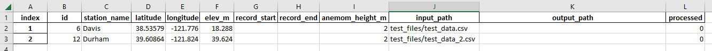

Data Preparation¶
In order for pyWeatherQAQC to work, you need to specify what weather variables are being provided, where in the data file they are located, and what units they are in. Most weather stations on a network have the same format for their data, so this process may only have to be done once for multiple stations.
All of this is accomplished through the parameters specified in config.ini, but before getting into that we’ll talk about directory structure.
Directory Structure¶

Assuming you have cloned the github directory, your folder should contain the following items:
The “qaqc_modules” directory containing the different functions used by the main script.
config.ini - The configuration file used by the script to find variables in the data file.
qaqc_single_station.py - The actual script you will call to process weather data. Your icon may not match what is pictured here.
A .csv, .xls, or .xlsx data file containing the weather data to process. In this example, it is located within the “test_files” folder.
When the file qaqc_single_station.py is run, it looks for the config.ini file within the same folder and starts pulling all the relevant information from that config file.
The github repository includes an example data file and a matching config.ini that is already set up to be run. This data is the one processed in the example run.
Note
pyWeatherQAQC saves all of the output files in the same directory as the input file, so plan accordingly!
Setting up the Config File¶
The configuration file “config.ini” can be broken down into 3 sections:
METADATA¶
The top section of the config.ini file is where you will specify the metadata of both the weather station the data came from and information abou the data file unrelated to measured variables. This includes things like the station’s geographical location and whether or not the file has a header.
OPTIONS¶
The next section of the config.ini file is where you will specify what options you want the script to run with. Examples of this would be whether or not you wanted to correct the data, or whether or not you wanted to generate and save plots of the data. This section may change in the future as more options are added.
All of the settings in this section are either set to “0” (indicating FALSE, or NO) or “1” (indicating TRUE, or YES). For most users, the only option you’ll actually change will be correction_option, depending on if you want to correct data or not.
DATA¶
The majority of work in setting up the config.ini file is done in this section, where we specify what variables are in which columns of data, and what units those variables are in. The configuration file has explanations for its various prompts, but as an example, we’ll look at specifying the details for solar radiation:

In this example, we can see that Solar radiation (Rs) data is measured in langleys (lang), and is located in Column F, which might lead you to think it’s in the 6th column. However, in Python, indexes start at 0, so Column A would be 0, Column B would be 1, and so on. Accounting for that, we would say Rs data is actually in Column 5.
Now that we have that information, we can go to the relevant section of the .ini file and fill it in:
![The configuration parameters for solar radiation in the [DATA] section.](_images/solar_config.png)
Fill in rs_col with the appropriate value (in this case, 4), and set the appropriate unit flag (in this case, langleys) from “0” (indicating FALSE) to “1” (indicating TRUE).
If, hypothetically, the solar radiation data was provided in w/m2, you would indicate that to the script by having all other unit flags be set to 0 (FALSE). The default units for each variable are always specified by the variable name.
A note on humidity data:
Humidity is commonly measured through either:
Actual Vapor Pressure (Ea)
Dewpoint Temperature (TDew)
Maximum and Minimum Relative Humidity (RHMax and RHMin)
Average Relative Humidity (RHAvg)
In terms of accuracy, this is a tiered list where the top option (Ea) is most desirable, and the bottom option (RHAvg) is the least. When configuring humidity measurements, input all the variables you may have, and the script will automatically pick the most preferable option.
Setting up the Metadata File¶
Setting up a metadata file is an optional step that may save time depending on how many datafiles need to be processed. When this metadata file is setup, the software will iterate through all the lines of files contained within it, so that you do not need to manually change the config file parameters for each station.
There is an example metadata file found within the test_files folder, which is shown here:
{kind=link}
You will need to fill out columns:
index - 1 to N, where N is the number of stations you have to process
id - ID for that station, may be a letter or string, that is used by the network
station_name - Name of that station
latitude - Latitude of the station
longitude - Longitude of the station
elev_m - Elevation of the station in meters
anemom_height_m - Height in meters of the station’s anemometer
input_path - path to the data file for the station, either absolute or relative to the file qaqc_single_station.py
run_count - this column should be filled with 0’s before starting. This column is used by the script to track which files have been run.
The following columns are still required within the metadata file, but will be filled out by the software:
record_start - Date at the start of the data file
record_end - Date at the end of the data file
output_path - relative path to the output file
notes - This is not filled out by the output file, but will hold manually-entered notes when tracking QC procedures.
Note
pyWeatherQAQC requires that the metadata column names exactly match what is found within the example metadata file. In addition, the file will constantly be read from/written to when it is used, so if you have the file open in Excel or some alternative the software will fail.
Running pyWeatherQAQC¶
Now that you have everything all set up, you have three options when running the software:
Option 1:
>python qaqc_single_station.py
This will try to find a config file named, “config.ini” in the same directory as qaqc_single_station.py and read parameters from it.
Option 2:
>python qaqc_single_station.py <PATH_TO_CONFIG_FILE>
This will try to open the config file located at the specified path and read parameters from it.
Option 3:
>python qaqc_single_station.py <PATH_TO_CONFIG_FILE> <PATH_TO_METADATA_FILE>
This will try to open the config file located at the specified path and read parameters from it, while also reading station metadata from the metadata file. This final option will allow you to rapidly iterate through your stations as you won’t have to edit the config file every time you process a station. (Assuming that all the stations have the same data format.)